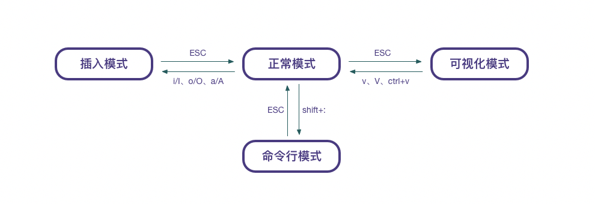

Vim is a well-known powerful and highly customizable text editor, which is loved by many developers. But the use of vim is still a bit difficult, there are many shortcuts and commands to remember. Next, I will introduce the use of vim.
Vim命令
Vim 有插入模式（insert）、正常模式（normal）、可视化模式（visual）以及命令行模式，四种模式之间的转换方法如下

一般模式
刚打开 vim 就是一般模式，左下角有 NORMAL,一般模式可以查看文件，修改文件，具体操作方法如下
光标移动
h 或 ← –> 光标左移一个字符j 或 ↓ –> 光标下移一个字符k 或 ↑ –> 光标上移一个字符l 或 → –> 光标右移一个字符
加上相应的数字之后可以移动多行，如
30j是下移 30 行
ctrl + f –> 屏幕下移一页ctrl + b –> 屏幕上移一页ctrl + d –> 屏幕下移半页ctrl + u –> 屏幕上移半页
+ –> 光标移动到非空格符的下一行- –> 光标移动到非空格符的上一行
n + space –> 光标会向右移动这一行的 n 个字符
0 或 home –> （数字 0）移动到这一行的最前面字符处$ 或 end –> 移动到这一行的最后面字符处
H –> 光标移动到这个屏幕的最上方那一行的第一个字符M –> 光标移动到这个屏幕的中央那一行的第一个字符L –> 光标移动到这个屏幕的最下方那一行的第一个字符G –> 移动到这个档案的最后一行nG –> n 为数字。移动到这个档案的第 n 行。例如 20G 则会移动到这个档案的第 20 行(可配合 :set nu)gg –> 移动到这个档案的第一行n + enter –> n 为数字。光标向下移动 n 行
搜索替换
/word –> 向下搜索字符串?word –> 向上搜索字符串
n –> 重复前一个动作，经常与搜索命令一起用，为重复搜索N –> 反向进行前一个动作，经常与搜索命令一起用，为反向重复搜索
:n1,n2s/word1/word2/g –> n1 与 n2 为数字。在第 n1 与 n2 行之间寻找 word1 这个字符串，并将该字符串取代为 word2:1,$s/word1/word2/g 或 :%s/word1/word2/g –> 从第一行到最后一行寻找 word1 字符串，并将该字符串取代为 word2:1,$s/word1/word2/gc 或 :%s/word1/word2/gc –> 从第一行到最后一行寻找 word1 字符串，并将该字符串取代为 word2 ！且在取代前显示提示字符给用户确认 (confirm) 是否需要取代
修改
x,X –> 在一行字当中，x 为向后删除一个字符 (相当于 [del])， X 为向前删除一个字符(相当于 [backspace])nx –> n 为数字，连续向后删除 n 个字符dd –> 删除游标所在的那一整行ndd –> n 为数字。删除光标所在的向下 n 行d1G –> 删除光标所在到第 1 行的所有数据dG –> 删除光标所在到最后一行的所有数据d$ –> 删除游标所在处，到该行的最后一个字符d0 –> 那个是数字的 0 ，删除游标所在处，到该行的最前面一个字符y –> 复制yy –> 复制游标所在的那一行nyy –> n 为数字。复制光标所在的向下 n 行y1G –> 复制游标所在行到第一行的所有数据yG –> 复制游标所在行到最后一行的所有数据y0 –> 复制光标所在的那个字符到该行行首的所有数据y$ –> 复制光标所在的那个字符到该行行尾的所有数据p,P –> p 为将已复制的数据在光标下一行贴上，P 则为贴在游标上一行c –> 重复删除多个数据，例如向下删除 10 行为 10cju –> 复原前一个动作，相当于word的 undoctrl + r –> 重做上一个动作，相当于word的 redo. –> 重复前一个动作:%d –> 清空文档（%表示所有行）
编辑模式
i,I –> 进入输入模式，i 从目前光标所在处输入， I 在目前所在行的第一个非空格符处开始输入a,A –> 进入输入模式，a 从目前光标所在的下一个字符处开始输入， A 从光标所在行的最后一个字符处开始输入o,O –> 进入输入模式，o 在目前光标所在的下一行处输入新的一行， O 在目前光标所在处的上一行输入新的一行r,R –> 进入取代模式，r 只会取代光标所在的那一个字符一次，R 会一直取代光标所在的文字，直到按下 ESC 为止
命令行模式
在命令行模式中可以输入会被解释成并执行的文本
文件操作
:w –> 保存文件:q –> 退出vim:wq –> 保存并退出vimZZ –> 保存后退出ZQ –> 不保存退出，Q表示放弃:w [filename] –> 将编辑的数据储存成另一个档案（相当于另存为）:r [filename] –> 在编辑的数据中，读入另一个档案的数据。亦即将 [filename] 这个档案内容加到游标所在行后面:! command –> 暂时离开 vim 到指令行模式下执行 command 的显示结果:n –> n为数字，跳转到第 n 行:n –> 打开新文件:edit /path/to/file –> 在vim中打开文件:saveas file –> 将文件另存为file，但不退出:pwd –> 显示当前路径:e. –> 打开当前目录
!表示强制，可以和:w、:q等一起使用，为强制执行
窗口操作
:tabo –> 关闭所有窗口:vsp,:sp –> 垂直/水平分割视窗:diffs –> 分割视窗并比较档案C-w p –> 跳转至前一个分割视窗C-w w –> 在窗口间循环切换C-w h –> 切换到左边的窗口C-w j –> 切换到下边的窗口C-w k –> 切换到上边的窗口C-w l –> 切换到右边的窗口C-w + –> 纵向扩大窗口C-w - –> 纵向缩小窗口:close –> 关闭当前窗口，但不能关闭最后一个
插件命令
NERDCommenter
<leader>cc –> 加注释<leader>cu –> 解开注释<leader>c<space> –> 加上解开注释智能判断<leader>cs –> 以“性感”的方式注释<leader>cA –> 行尾添加注释并进入Insert模式n<leader>cc –> 以下n行添加注释n<leader>cu –> 以下n行取消注释n<leader>cm –> 为光标以下n行添加块注释
Doxygen
:DoxLic –> 生成License:DoxAuthor –> 插入文档注释，会提示输入版本号:Dox –> // 插入注释:DoxBlock –> // 插入一个注释块
NERDTree
:NERDTree –> 显示 NERDTree 即左边边目录栏
Tagbar
:TagBarToggle –> 显示 Tagbar 即右边函数栏

欢迎访问 dusign 的博客，博客系统一键分享的功能还在完善中，请大家耐心等待。 若有问题或者有好的建议欢迎留言，笔者看到之后会及时回复。 评论点赞需要github账号登录，如果没有账号的话请点击 github 注册， 谢谢 !
If you like this blog or find it useful for you, you are welcome to comment on it. You are also welcome to share this blog, so that more people can participate in it. If the images used in the blog infringe your copyright, please contact the author to delete them. Thank you !